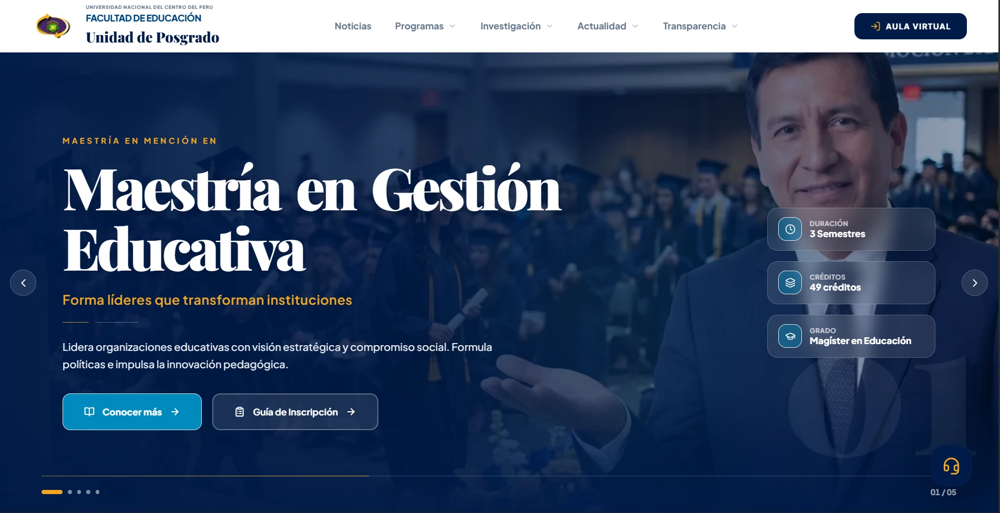
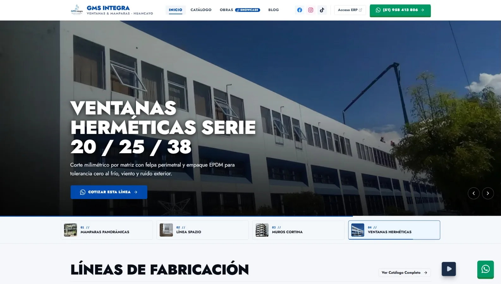
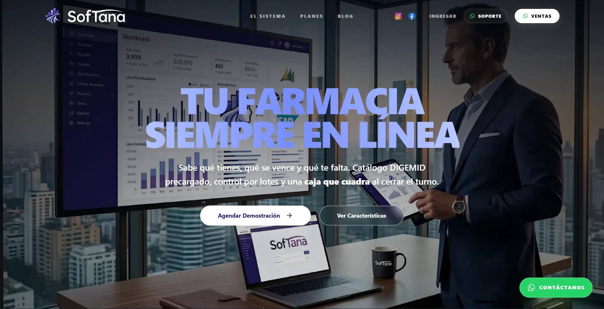
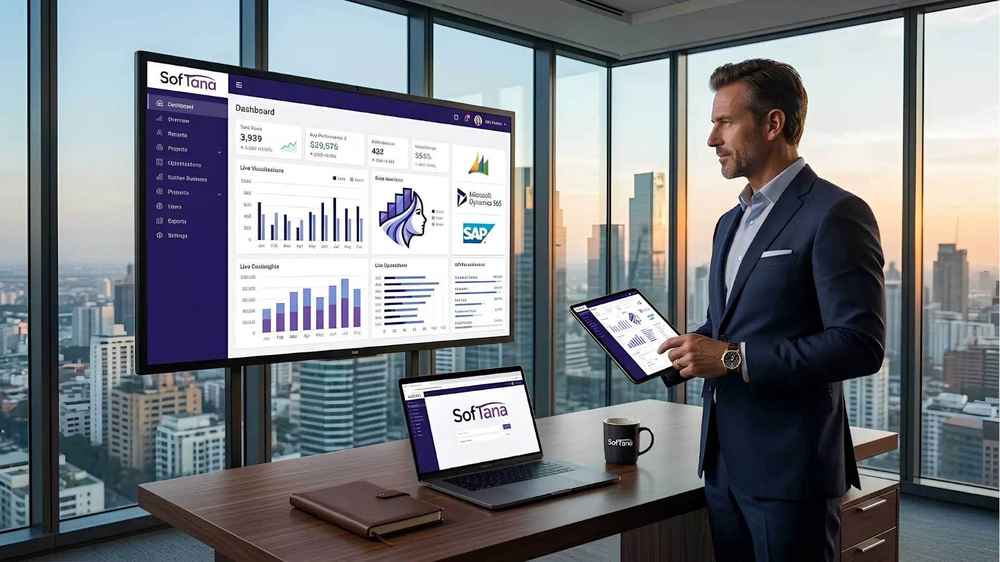
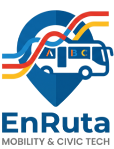
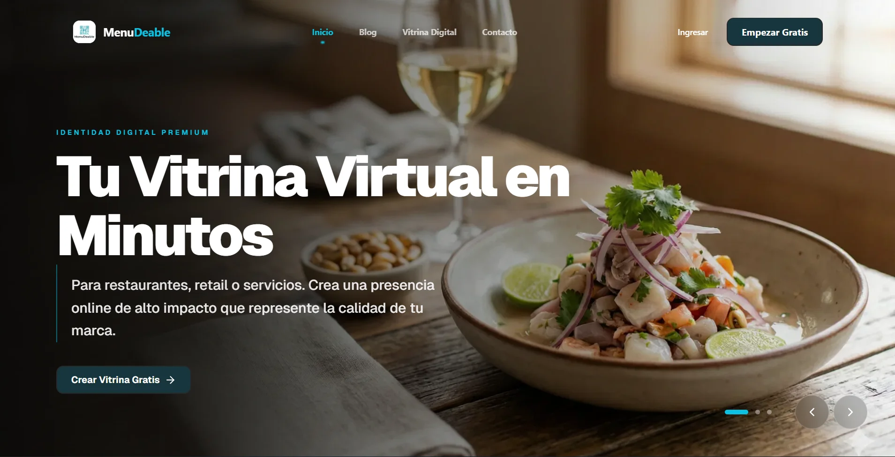
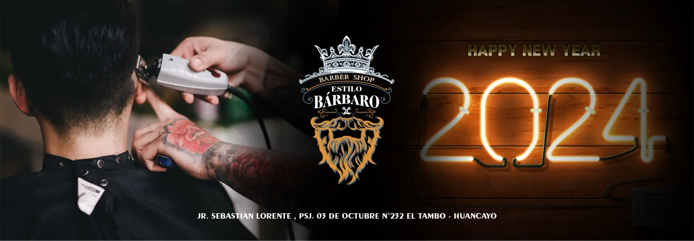
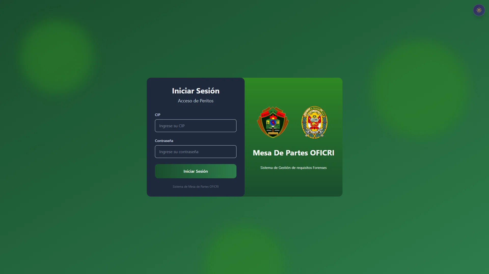
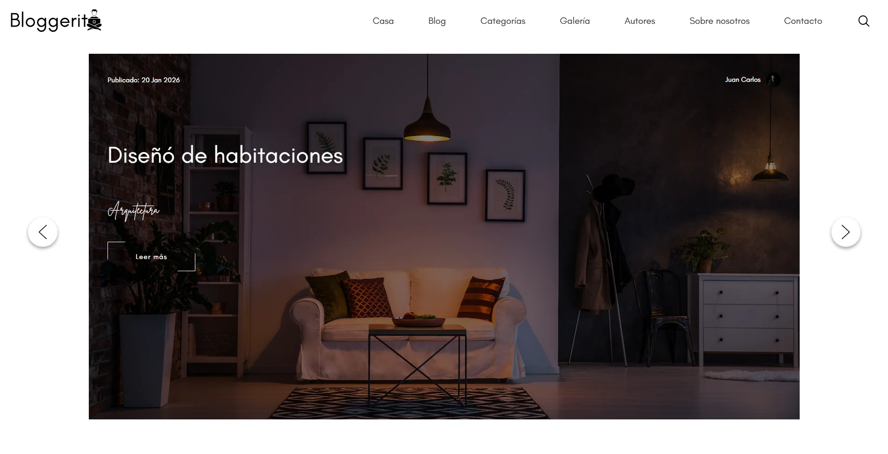

Educación & UNCP
Portal Académico UP Educación — UNCP
Digitalización integral del ecosistema informativo y académico de la Unidad de Posgrado de la Facultad de Educación de la UNCP.
UNIVERSIDAD NACIONAL DEL CENTRO DEL PERÚ
FACULTAD DE INGENIERÍA DE SISTEMAS
DEPARTAMENTO ACADÉMICO DE INGENIERÍA DE SISTEMAS
Casos de éxito, arquitectura de software y plataformas digitales desarrolladas por Sudolabs e iniciativas académicas UNCP.

Digitalización integral del ecosistema informativo y académico de la Unidad de Posgrado de la Facultad de Educación de la UNCP.

Plataforma digital para fabricante de ventanas y mamparas de vidrio en Huancayo: catálogo de líneas, showcase de obras y acceso a ERP interno.

Web institucional de SofTana: interfaz Cine-Tech diseñada para transmitir confianza y control absoluto a boticarios y cadenas de farmacias.

Punto de venta y control de inventario para boticas peruanas con arquitectura offline-first que garantiza ventas continuas aun sin conexión a internet.

Plataforma que digitaliza el transporte público urbano en Latinoamérica: rutas, paraderos y tarifas en tiempo real mediante crowdsourcing colaborativo.

SaaS Headless de alto rendimiento para la industria culinaria: menús virtuales dinámicos con renderizado ultra rápido y gestión de órdenes.

Transformación operativa de barbería tradicional a un modelo analítico: reservas en tiempo real, control de caja y fidelización de clientes.

Reingeniería del flujo pericial criminalístico, sustituyendo expedientes físicos con una plataforma digital segura de control y trazabilidad.

Plataforma de contenidos multi-categoría orientada al posicionamiento orgánico, accesibilidad y máxima velocidad de renderizado para autores.
Facultad de Ingeniería de Sistemas — Universidad Nacional del Centro del Perú.
Ciudad Universitaria: Av. Mariscal Castilla N° 3909, Huancayo, Junín, Perú.
Colaboración técnica con Sudolabs (sudolabs.space).